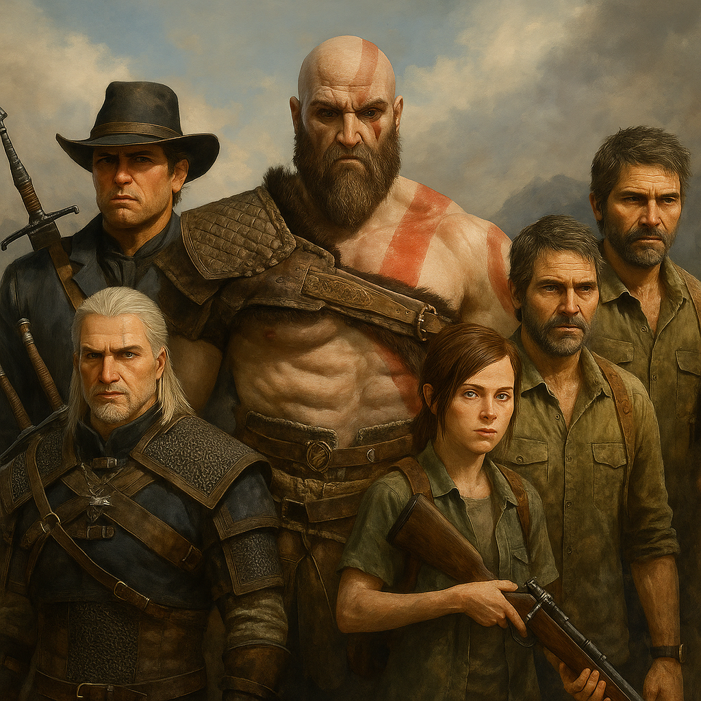
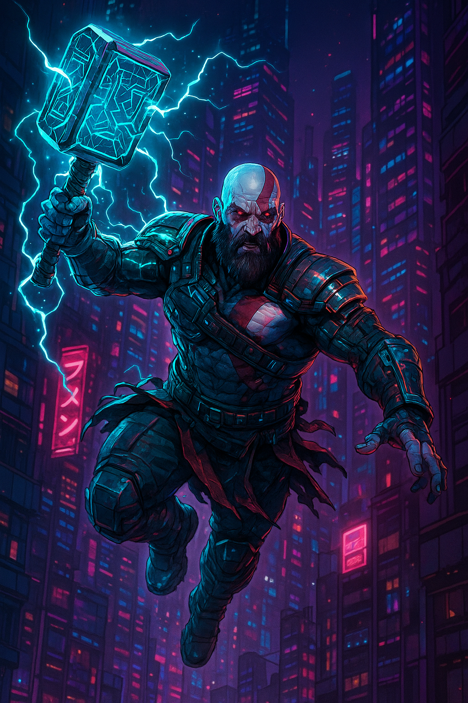
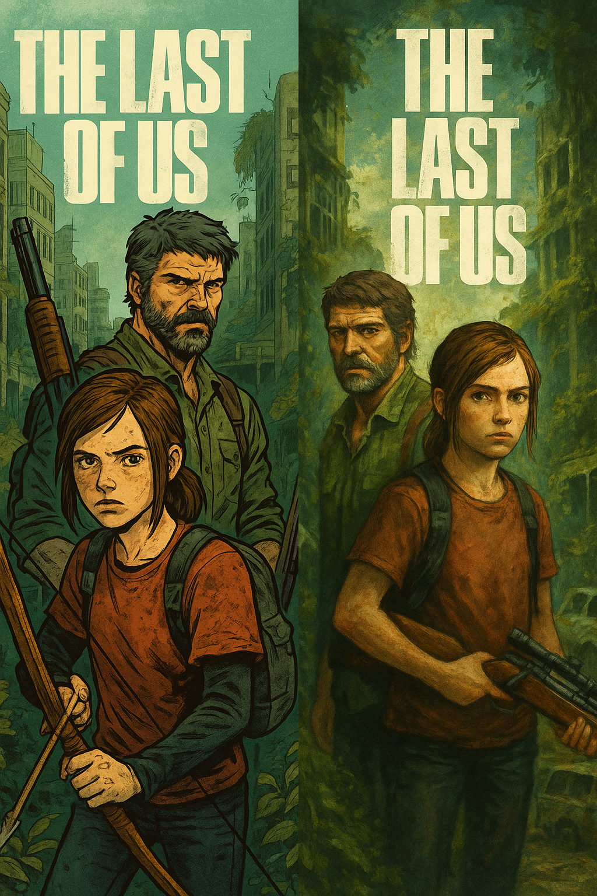
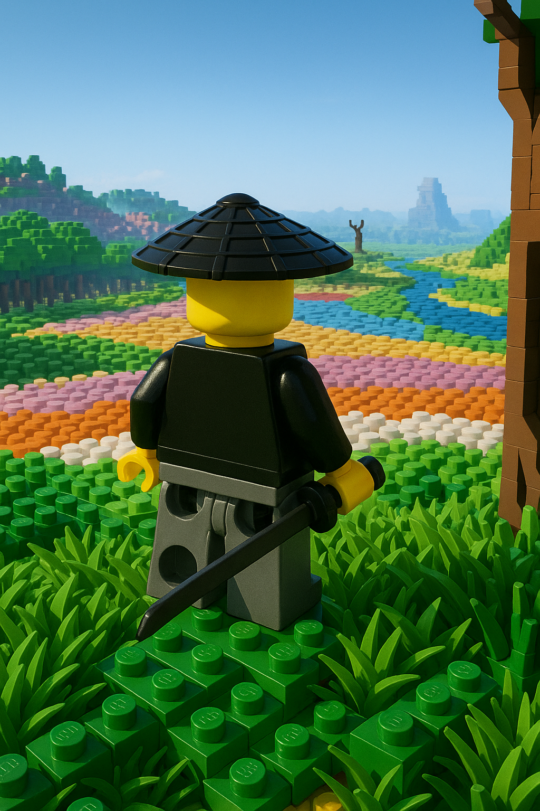
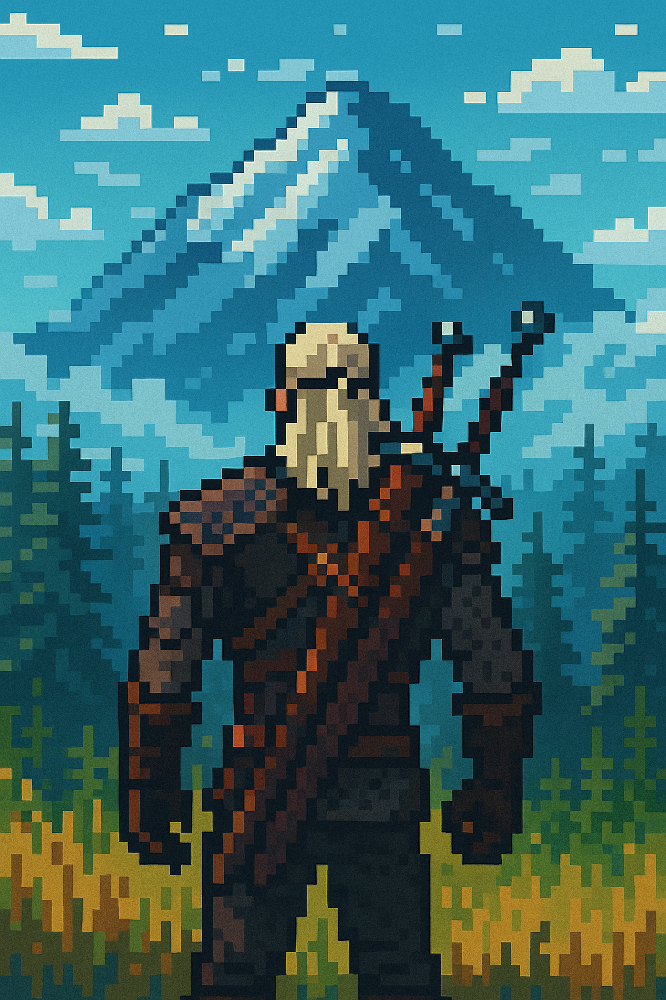

THE 6 MOST ENJOYABLE GAMES TO ENGAGE IN
By Marwan | June 5, 2025
In the fast-moving world of gaming, staying up to date with what’s hot can be a challenge. Whether you're a casual player or a dedicated gamer, knowing which titles are dominating the charts helps you discover new adventures and stay in the loop. From intense battle royales to immersive RPGs and creatively crafted indie gems, today's most popular games span genres and platforms. In this article, we dive into the top 10 games that are currently setting the gaming world on fire — the ones everyone’s playing, streaming, and talking about. Ready to level up your gaming list? Let’s jump in.
1_UNCHARTED 4: A THIEF'S END:
Images generated by ChatGPT Sora

Images automatically loop
UNCHARTED 4: A THIEF'S END: Video Generated by AI
AI-generated gameplay footage using Gen-4 Turbo
The Uncharted Audio-Text
Uncharted 4: A Thief’s End is widely regarded as one of the greatest action-adventure games of its generation. Developed by Naughty Dog and released exclusively for PlayStation 4, the game marked a powerful and emotional conclusion to the story of treasure hunter Nathan Drake. With its cinematic storytelling, breathtaking visuals, and smooth gameplay, Uncharted 4 received universal acclaim from critics and players alike. It won several major awards, including Best Narrative and Best Performance at The Game Awards 2016, and was named Game of the Year by multiple gaming publications. Selling over 15 million copies worldwide, it remains one of the best-selling PS4 games of all time. Its blend of gripping drama, explosive action, and unforgettable locations has made it a must-play masterpiece for any gaming fan.
2_GOD OF WAR:
Images generated by ChatGPT Sora
Click on the image to view the next picture
GOD OF WAR: Video Generated by AI
Gen-4 TurboAI-generated cinematic sequence using Runway's Gen-4 Turbo technology
The God Of War Audio-Text
God of War is one of PlayStation’s most iconic and celebrated franchises, known for its brutal combat, rich mythology, and unforgettable storytelling. The series began in 2005 on the PlayStation 2, introducing players to Kratos, the Ghost of Sparta, on a blood-soaked quest for vengeance against the Greek gods. The original trilogy (God of War I, II, and III) became instant classics, praised for their cinematic style and epic scale. In 2018, the series was reborn with God of War (PS4), shifting to Norse mythology and delivering a deeper, more emotional story centered on Kratos and his son, Atreus. This bold reinvention won Game of the Year at The Game Awards 2018 and redefined what a mature action-adventure game could be. Its sequel, God of War Ragnarök (2022), expanded on this success with even grander battles and storytelling, winning several awards including Best Narrative and Best Action/Adventure Game. With over 50 million copies sold across the franchise, God of War continues to set the bar for mythological action games and remains a pillar of PlayStation’s legacy.
3_THE LAST OF US :
Images generated by ChatGPT Sora
Click on the image to view the next picture
THE LAST OF US: Video Generated by AI
AI-generated post-apocalyptic cinematic sequence
The Last Of Us Audio-Text
The Last of Us is a groundbreaking action-adventure series developed by Naughty Dog, renowned for its emotional storytelling, realistic characters, and cinematic gameplay. The first game, released in 2013 on the PlayStation 3, follows the harrowing journey of Joel and Ellie across a post-apocalyptic America ravaged by a deadly fungal infection. Widely praised for its writing, voice acting, and atmosphere, The Last of Us received over 200 Game of the Year awards, making it one of the most critically acclaimed games of all time. Its sequel, The Last of Us Part II (2020), pushed the boundaries of narrative in gaming even further, delivering a bold, controversial, and deeply emotional story. It won Game of the Year, Best Narrative, and Best Audio Design at The Game Awards 2020, among other accolades. The franchise’s influence extended beyond gaming with the HBO adaptation, which became a global hit in 2023. With more than 45 million copies sold and a massive fanbase, The Last of Us is considered a modern classic and a shining example of storytelling in interactive media.
4_GHOST OF TSUSHIMA :
Images generated by ChatGPT Sora
Images automatically loop
GHOST OF TSUSHIMA: Video Generated by AI
AI-generated feudal Japan cinematic experience
The Ghost Of Tsushima Audio-Text
Ghost of Tsushima, developed by Sucker Punch Productions and released in 2020 for the PlayStation 4, is a visually stunning and emotionally rich open-world samurai epic. Set during the Mongol invasion of Japan in the late 13th century, the game follows Jin Sakai, a samurai torn between tradition and survival as he transforms into the "Ghost" to protect his homeland. The game was praised for its breathtaking art direction, fluid sword combat, and immersive storytelling. It quickly became a fan favorite, selling over 9.7 million copies by 2022 and receiving numerous awards, including Player's Voice at The Game Awards 2020, Best Art Direction, and Best Game Direction nominations. It was especially celebrated in Japan for its respectful portrayal of Japanese culture and history — even receiving honorary recognition from a real-life Tsushima island tourism group. With the addition of the Ghost of Tsushima: Director's Cut and its multiplayer mode, Legends, the game solidified its place as one of the standout titles of the PlayStation era and a modern open-world masterpiece.
5_THE WITCHER 3: WILD HUNT :
Images generated by ChatGPT Sora
The Witcher Audio-Text
The Witcher 3: Wild Hunt, developed by CD Projekt Red and released in 2015, is widely considered one of the greatest role-playing games of all time. Set in a richly detailed open world inspired by Slavic mythology and medieval fantasy, players step into the boots of Geralt of Rivia, a monster hunter navigating war-torn kingdoms, political intrigue, and supernatural threats. With its deep storytelling, morally complex choices, and expansive world, The Witcher 3 captivated both fans and critics, earning over 250 Game of the Year awards and becoming a benchmark for open-world RPGs. Its two expansions — Hearts of Stone and Blood and Wine — were equally praised, with Blood and Wine considered one of the best DLCs ever made. The game has sold over 50 million copies, and its popularity surged even further with the release of the Netflix series based on the same universe. The Witcher 3 is not just a game, but a cultural phenomenon that redefined storytelling and immersion in video games.
6_Red Dead Redemption 2 :
Images generated by FIREFLY

Click on the image to view the next picture
RED DEAD REDEMPTION: Video Generated by AI
AI-generated Western cinematic experience • Click controls to play
Red Dead Redemption 2 Audio-Text
Red Dead Redemption 2 is more than a game — it's a living, breathing epic that redefined what interactive storytelling and open-world design could be. Developed by Rockstar Games and released in 2018, it serves as a prequel to the original Red Dead Redemption and follows Arthur Morgan, a complex, morally torn outlaw navigating the dying days of the American frontier. From its jaw-dropping landscapes and lifelike NPCs to its haunting soundtrack and deeply emotional narrative, RDR2 sets a new gold standard for immersion. Every choice you make — whether in quiet moments of reflection by a campfire or explosive shootouts on horseback — shapes the world and Arthur himself. The game received universal critical acclaim, earning over 175 Game of the Year awards, including Best Narrative, Best Score/Music, and Best Performance at The Game Awards 2018. With over 61 million copies sold by 2024, it remains one of the highest-rated and best-selling games of all time. Red Dead Redemption 2 is not just a technical achievement — it's a profoundly human experience that lingers in the hearts of players long after the credits roll.